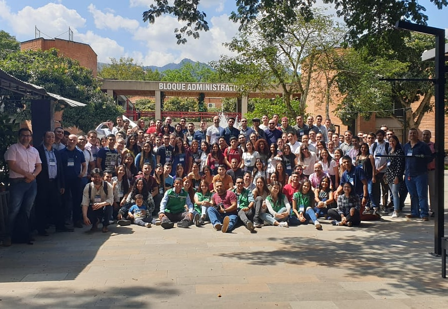
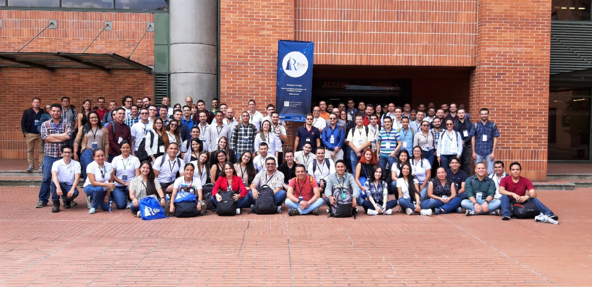

Sobre mí
\(\bf Origen:\) Caucasia, Antioquia, Colombia.
\(\bf Residencia:\) Medellín, Antioquia, Colombia.
\(\bf Academia:\) Universidad Nacional de Colombia sede Medellín.
\(\bf Beca:\) Mejores Bachilleres - Gobernación de Antioquia.
\(\bf Correos:\) yuberth98@gmail.com o yuasaavedraco@unal.edu.co

\(\bf \text{Perfil académico}\)
\(\bf Formación\)
Estudiante del pregrado en Estadística - Universidad Nacional de Colombia sede Medellín, actualidad.
Bachiller Académico - Institución Educativa Liceo Caucasia, 2015.
\(\bf \text{Cursos cortos}\)
Introducción al análisis de datos utilizando R, Facultad de Ciencias Agrarias de la Universidad Nacional de Colombia sede Medellín, 2018.
Reglas de Juego en Fútbol Sala, ARBIANTIOQUIA, 2018, Medellín.
Énfasis. Cooperativismo con actividad financiera. Confecoop Antioquia, Medellín, 2017.
Curso básico de cooperativismo. Confecoop Antioquia, Medellín, 2017.
Semillero de Matemáticas Lógicas Seccional Bajo Cauca, Universidad de Antioquia, Medellín, 2015.
\(\bf Experiencias\)
- Participación en el XII Coloquio de Estadística: Métodos estadísticos en la generación de conocimientos, con el póster titulado “Modelos alternativos para predecir la tasa de natalidad en función de los factores ambientales y socioeconómicos de un país”, Universidad Nacional de Colombia sede Medellín, 2019.

- Participación de las actividades académicas del RDAY MEDELLÍN 2019 con la comunicación oral titulada “Modelos alternativos para predecir la tasa de natalidad en función de los factores ambientales y socioeconómicos de un país”, Escuela de Estadística de la Universidad Nacional de Colombia sede Medellín, 2019.

Horas sociales de la beca - Institución Educativa Liceo Caucasia, desde 2017 hasta la actualidad.
\(\bf \text{Perfil deportivo}\)
\(\bf \text{Como árbitro}\)
Soy Árbitro de la disciplina de Fútbol Sala y me encuentro inscrito en la Corporación Arbiantioquia. Mi categoría es primera C, y poseo la escarapela de la Federación Colombiana de Fútbol. Los eventos deportivos en los que he participado son:
- ASCUN nacional, Medellín 2018.
- Juegos deportivos regionales en Peque, Antioquia, 2018.
- Pretemporada departamental de árbitros, primera C, 2019.
- Juegos deportivos del magisterio en Jardín, Antioquia, 2019.
- 40º Juegos Supérate Intercolegiados del Norte y Bajo Cauca en Donmatías, Antioquia, 2019.
- 42º Juegos Departamentales “Indeportes Antioquia 50 años” – Final Departamental, Apartado, Antioquia, 2019.

\(\bf \text{Como deportista}\)
Desde mi ingreso a la UnalMed he hecho parte de la Selección de Fútbol Sala de la Universidad Nacional de Colombia, sede Medellín. Los torneos en los que hemos competido son:
- Liga Antioqueña de Fútbol, torneo Fútbol Sala FIFA Sala.
- Copa Metropolitana de Fútbol Sala.
- Juegos Universitarios INDER.
- Torneo ASCUN departamental, nodo Antioquia.
- Estuve con la Selección Medellín en el zonal departamental del área metropolitana del Valle de Aburrá, 2019.